Cara memakai Mubeena
Langkah demi langkah dengan gambar dari aplikasi. Angka oranye di gambar = tombol yang diketuk; penjelasannya ada di daftar bernomor yang sama.
- Sebelum mulai
- Layar utama
- Mencari surah, ayat, atau halaman
- Baca
- Dengar
- Takrir (mengulang)
- Setor (fitur utama)
- Tes sambung ayat
- Ayat mirip
- Peta hafalan
- Pengaturan
- Arti warna
- Tips
Sebelum mulai
- Saat pertama dibuka, sambungkan ke internet: data Al-Qur'an diunduh sekali, sekitar 5 MB.
- Izinkan mikrofon saat diminta. Suara Anda diperiksa AI langsung di HP dan tidak dikirim ke mana pun. AI-nya bekerja tanpa internet; suara qari perlu internet.
- Angka di gambar menunjukkan tombol yang diketuk. Ketuk gambar untuk melihatnya lebih besar.
📱 Layar utama
Kenali tombol-tombolnya
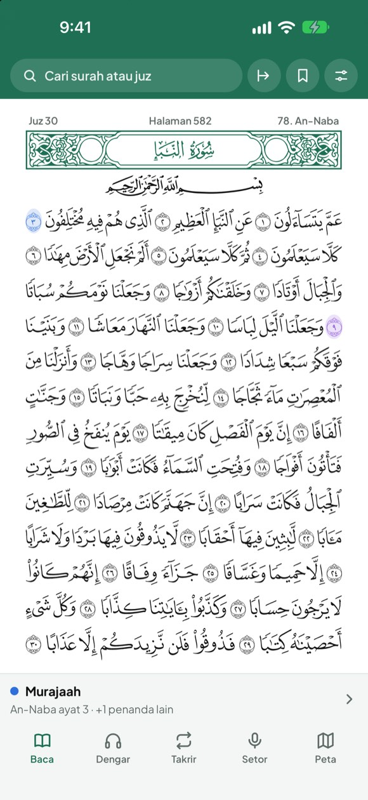
1234567- 1Cari surah atau juz: ketik nama surah atau pilih juz.
- 2Pergi ke: langsung ke ayat atau halaman tertentu.
- 3Penanda: daftar tempat yang Anda tandai.
- 4Pengaturan: bahasa, mode malam, cadangan data, panduan singkat.
- 5Halaman mushaf: geser ke kanan untuk halaman berikutnya, ke kiri untuk halaman sebelumnya. Ketuk sebuah ayat untuk pilihan ayat itu.
- 6Baris tombol untuk menu yang sedang dibuka. Di Baca: penanda yang ada di halaman ini.
- 7Lima menu: Baca, Dengar, Takrir, Setor, Peta.
🔎 Mencari surah, ayat, atau halaman
Cari surah atau juz
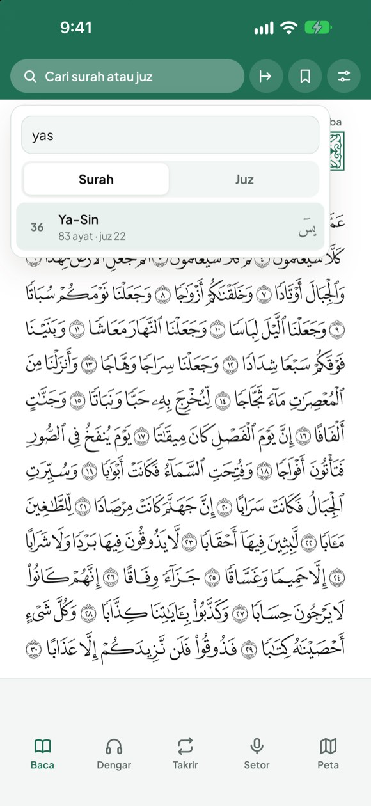
123- 1Ketik nama surah atau nomornya. Daftarnya langsung menyaring.
- 2Pilih Surah atau Juz.
- 3Ketuk surahnya untuk membuka halamannya.
Pergi ke ayat atau halaman
Tekan tombol Pergi ke (nomor 2 di layar utama).
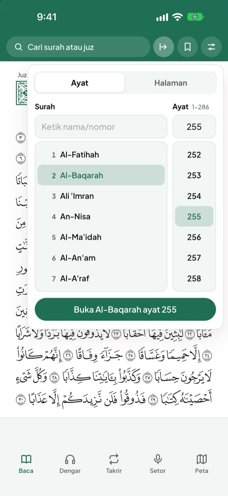
123456- 1Pilih Ayat atau Halaman.
- 2Ketik nama surah, misalnya "baqarah".
- 3Atau geser daftar surah dan ketuk salah satunya.
- 4Ketik nomor ayat.
- 5Atau geser daftar nomor ayat dan ketuk nomornya: ayat itu langsung terbuka.
- 6Tekan Buka.
📖 Baca
Terjemahan dan menandai ayat
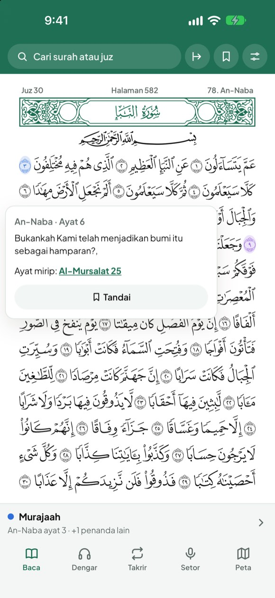
123- 1Ketuk nomor ayat (atau salah satu katanya).
- 2Terjemahan ayat itu.
- 3Tandai: simpan ayat ini ke penanda (pilih penanda yang ada atau buat baru).
Penanda
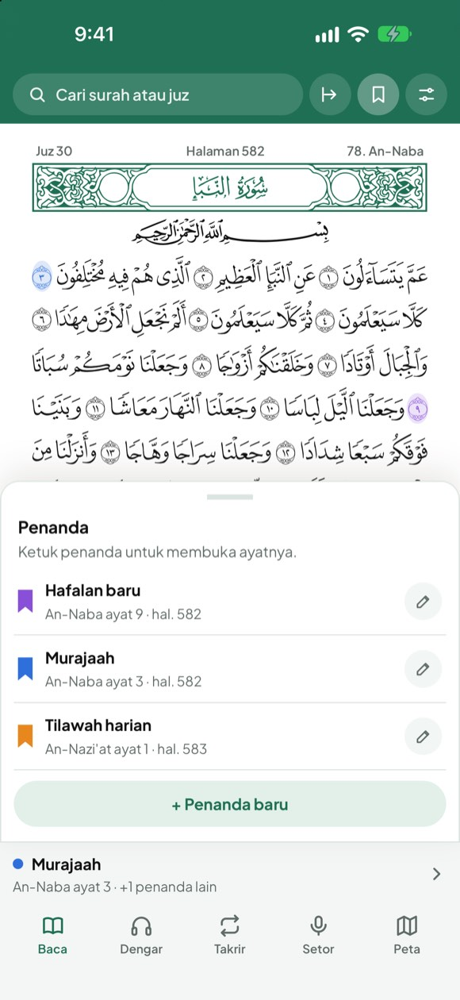
1234- 1Buka daftar penanda.
- 2Ketuk penanda untuk langsung ke ayatnya.
- 3Ikon pensil: ganti nama, ganti warna, atau hapus.
- 4Buat penanda baru untuk halaman yang sedang dibuka.
🎧 Dengar
Mendengarkan qari untuk menghafal, bisa diulang-ulang per ayat.
Menu Dengar
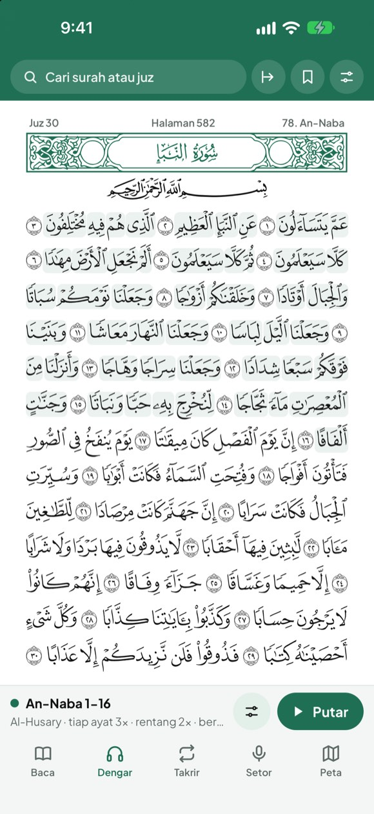
1234- 1Buka menu Dengar.
- 2Ayat yang akan diputar dan qarinya.
- 3Tombol pengaturan: qari, ayat, dan pengulangan.
- 4Putar. Saat diputar tombolnya menjadi Jeda.
Mengatur yang diputar
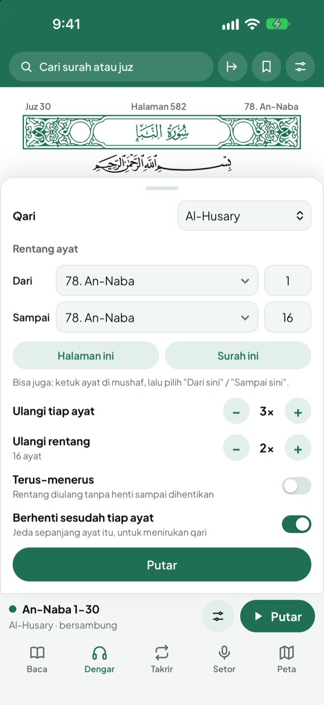
12345678- 1Pilih qari.
- 2Dari dan Sampai: ketuk nama surah atau nomor ayat untuk memilihnya.
- 3Pilihan cepat: Halaman ini atau Surah ini.
- 4Ulangi tiap ayat: berapa kali setiap ayat dibaca.
- 5Ulangi rentang: berapa kali seluruh rentang diulang.
- 6Terus-menerus: diulang tanpa henti sampai Anda hentikan.
- 7Berhenti sesudah tiap ayat: ada jeda untuk menirukan qari.
- 8Tekan Putar.
Memilih surah dan ayat
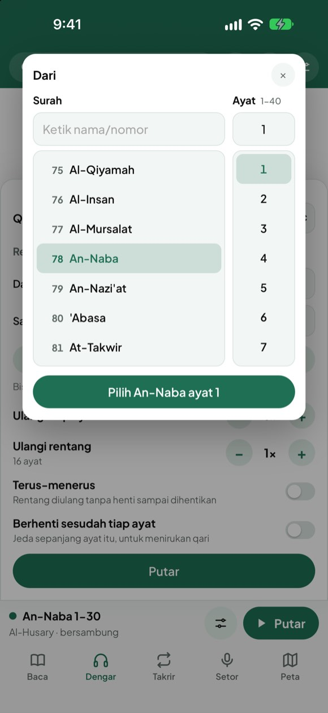
12345- 1Ketik nama surah; daftarnya menyaring sendiri.
- 2Atau geser dan ketuk surahnya.
- 3Ketik nomor ayat.
- 4Atau ketuk nomor ayat di daftar.
- 5Tekan Pilih.
Cara cepat dari mushaf
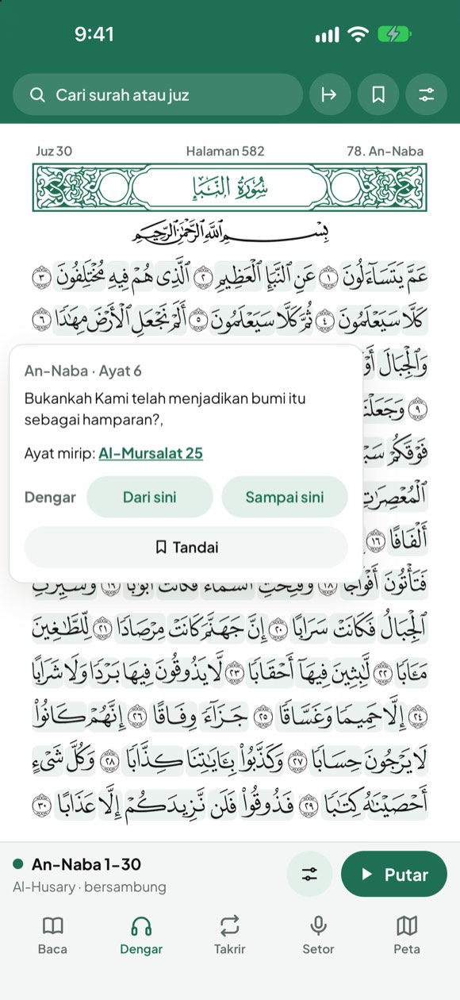
123- 1Di menu Dengar, ketuk nomor ayat tempat mulai.
- 2Dari sini: mulai dari ayat ini.
- 3Sampai sini: berhenti di ayat ini. Lembar pengaturan terbuka; tekan Putar di sana.
Saat qari membaca
- 1Ayat yang sedang dibaca diberi warna; halaman ikut berganti.
- 2Ayat yang sedang diputar. Kalau Anda membuka halaman lain, ketuk di sini untuk kembali.
- 3Jeda atau lanjutkan.
- 4Ikon Dengar bergerak selama qari membaca. Suara tetap jalan walau layar dikunci.
🔁 Takrir (mengulang)
Mengulang-ulang hafalan sampai lancar, dihitung dengan tombol +1 atau oleh AI.
Menu Takrir
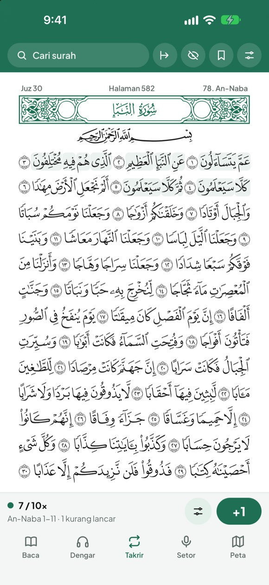
1234- 1Buka menu Takrir.
- 2Sudah berapa kali dari target.
- 3Tombol pengaturan: ayat, target, AI.
- 4Tekan +1 setiap selesai membaca rentangnya.
Pengaturan Takrir
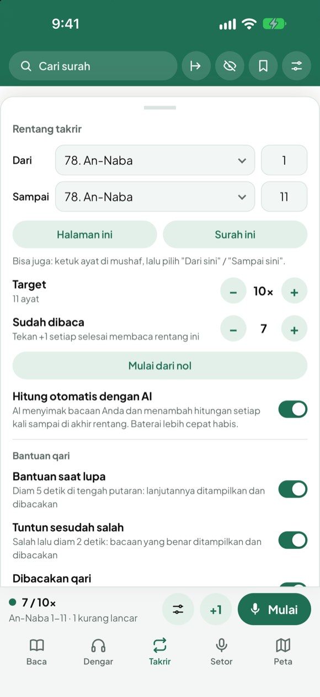
1234567- 1Ayat yang diulang: Dari dan Sampai.
- 2Pilihan cepat: Halaman ini atau Surah ini.
- 3Target: berapa kali ingin diulang.
- 4Sudah dibaca: hitungan sekarang, bisa dibetulkan dengan − dan +.
- 5Mulai dari nol.
- 6Hitung otomatis dengan AI: AI menyimak dan menghitung sendiri.
- 7Bantuan qari saat lupa dan sesudah salah (hanya bila AI menyala).
Takrir dengan AI
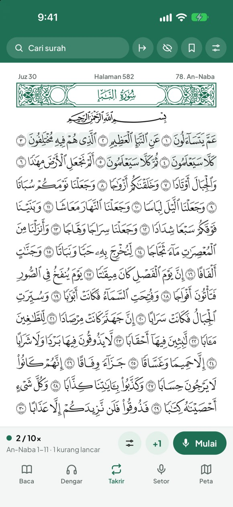
123- 1Tekan Mulai, lalu baca berulang-ulang tanpa menyentuh HP.
- 2Tombol +1 tetap ada kalau ingin menambah sendiri.
- 3Hitungan naik sendiri setiap Anda sampai di akhir rentang.
Saat membaca
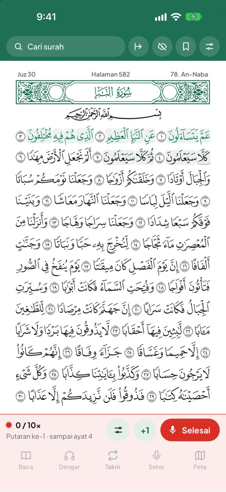
1234- 1Kata yang sudah Anda baca berwarna hijau.
- 2Garis di bawah kata = kata berikutnya yang ditunggu.
- 3Putaran ke berapa dan sampai ayat mana.
- 4Tekan Selesai kalau sudah.
Satu putaran selesai
Begitu Anda sampai di akhir rentang, muncul tulisan "Putaran ke-1 selesai." Langsung baca lagi dari awal untuk putaran berikutnya.
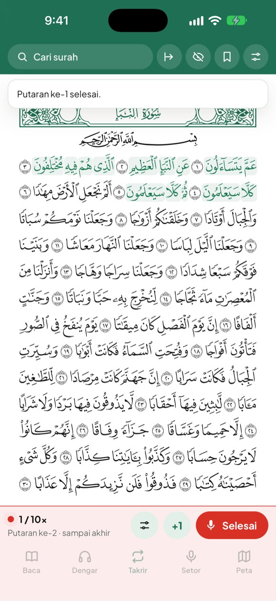
123- 1Hitungannya bertambah sendiri.
- 2Putaran yang sedang berjalan.
- 3Tekan Selesai kalau target sudah tercapai atau ingin berhenti.
🎙️ Setor (fitur utama)
Setor hafalan, disimak AI seperti kepada seorang ustadz.
Menu Setor
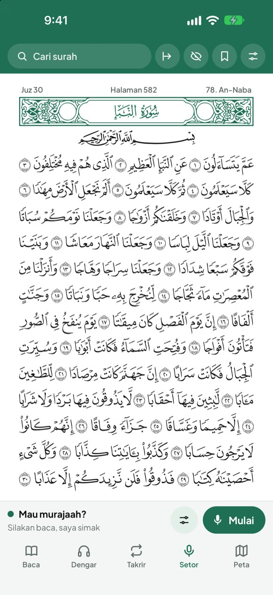
1234- 1Buka menu Setor.
- 2Mode hafalan: teks ditutup, untuk setor tanpa melihat.
- 3Pengaturan setoran (bantuan qari, bunyi, Tes sambung ayat).
- 4Tekan Mulai, lalu baca dengan suara jelas dan tempo biasa.
Saat membaca
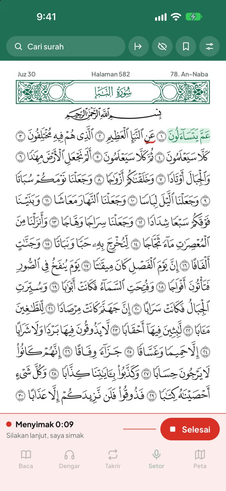
123- 1Kata yang benar menjadi hijau, mengikuti bacaan Anda.
- 2Garis di bawah kata = kata berikutnya.
- 3Tekan Selesai kalau sudah.
Kalau salah baca
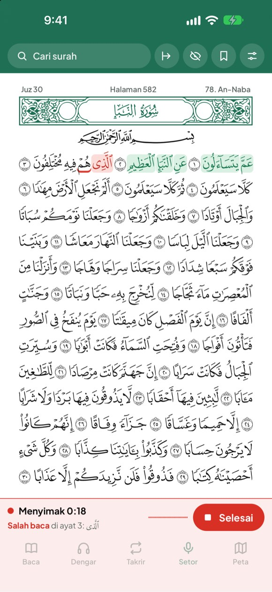
12- 1Kata yang salah menjadi merah dan terdengar bunyi "ting". Kalau langsung Anda betulkan, cukup: kata itu menjadi oranye. (Sesaat sebelumnya kata itu bergaris abu-abu: AI sedang memeriksa ulang.)
- 2Keterangan kesalahannya di baris bawah.
Qari menuntun
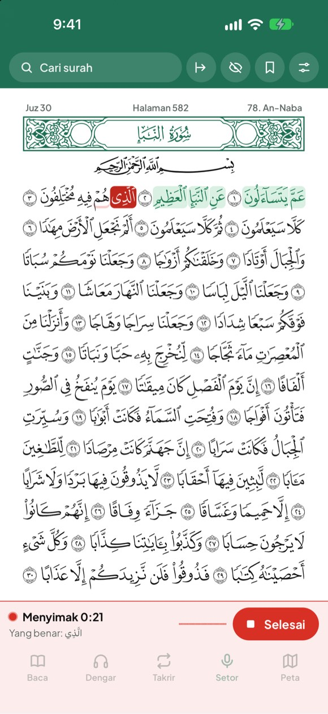
12- 1Kalau tidak dibetulkan, sekitar 2 detik kemudian qari membacakan yang benar. Dengarkan sampai selesai.
- 2Lalu ulangi dari kata itu (atau dari awal ayatnya).
Kalau lupa
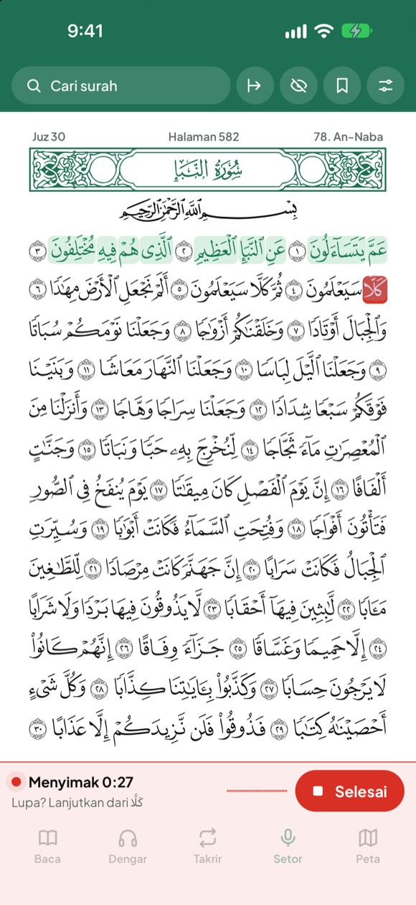
12- 1Diam saja sekitar 5 detik: kata berikutnya muncul (ungu) dan dibacakan qari.
- 2Tunggu qari selesai, lalu lanjutkan bacaan Anda.
Lembar hasil
Muncul begitu Anda menekan Selesai.
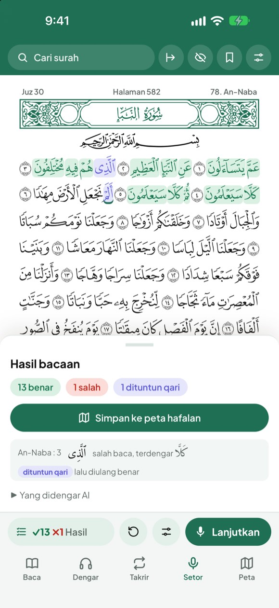
1234- 1Jumlah kata benar, salah, dan yang dibantu qari.
- 2Simpan ke peta hafalan untuk mencatat hasil ini.
- 3Daftar kesalahan beserta apa yang terdengar oleh AI. Ketuk satu baris untuk melihat katanya di halaman.
- 4"Dituntun qari": kesalahan yang dibacakan qari, dan apakah sudah Anda ulang dengan benar.
Mode hafalan
- 1Nyalakan atau matikan Mode hafalan.
- 2Teks tertutup; kata-kata terbuka sendiri saat Anda membacanya.
- 3Ketuk kata yang tertutup untuk mengintip.
Pengaturan setoran
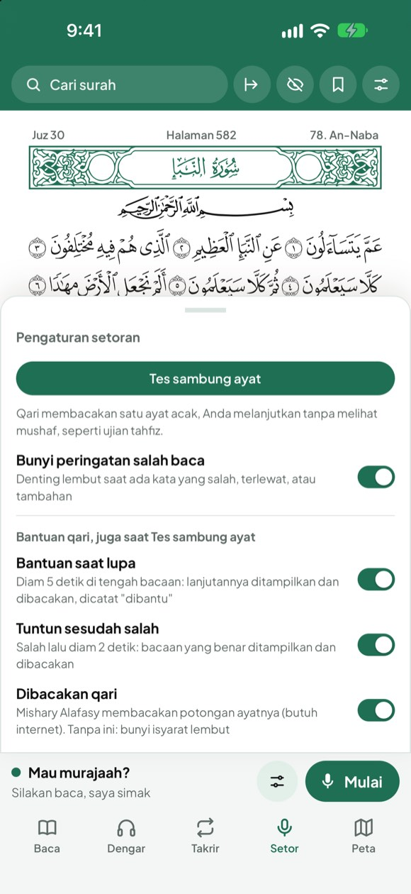
12345- 1Tes sambung ayat (lihat di bawah).
- 2Bunyi peringatan salah baca.
- 3Bantuan saat lupa: qari membantu sesudah 5 detik diam.
- 4Tuntun sesudah salah: qari membacakan yang benar.
- 5Dibacakan qari: suara Mishary Alafasy (butuh internet); tanpa ini hanya bunyi isyarat.
🧩 Tes sambung ayat
Seperti ujian tahfiz: qari membacakan satu ayat acak, Anda melanjutkan dari hafalan.
Menyiapkan tes
Buka dari pengaturan Setor › Tes sambung ayat.
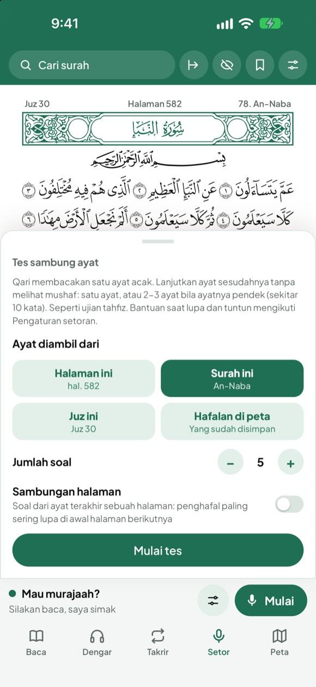
1234- 1Ayat diambil dari: Halaman ini, Surah ini, Juz ini, atau Hafalan di peta.
- 2Jumlah soal.
- 3Sambungan halaman: soal dari ayat terakhir halaman, untuk melatih menyambung ke halaman berikutnya.
- 4Tekan Mulai tes.
Menjawab soal
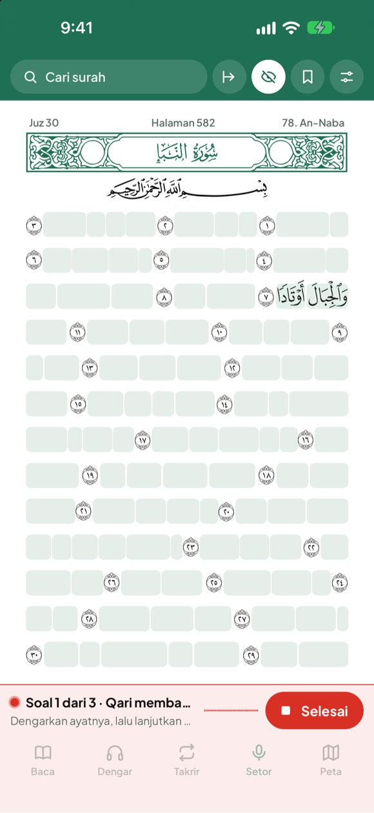
123- 1Ayat soal ditandai dan dibacakan qari. Teks lainnya ditutup.
- 2Berapa ayat yang perlu Anda sambung. Mulailah membaca begitu qari selesai.
- 3Aplikasi berhenti sendiri sesudah ayat terakhir terbaca; hasilnya Lancar atau Belum lancar, lalu Soal berikutnya.
🔀 Ayat mirip
Kalau bacaan tertukar dengan ayat lain
Lembar hasil menulis "tertukar dengan …". Ketuk tulisan itu.
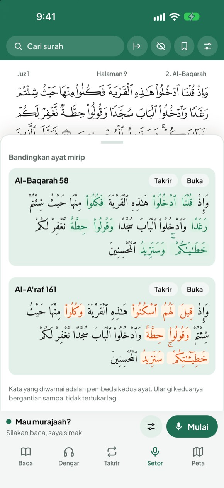
1234- 1Ayat yang seharusnya Anda baca.
- 2Ayat lain yang mirip.
- 3Kata yang berbeda diberi warna.
- 4Buka halaman ayat itu.
🗺️ Peta hafalan
Melihat hafalan Anda
- 1Buka menu Peta.
- 2Setiap kata yang pernah disetor dan disimpan diwarnai sesuai hasil terakhirnya.
- 3Arti warna dan kemajuan halaman ini.
- 4Hapus peta (bisa dibatalkan beberapa detik).
- 5Ringkasan per surah dan per juz.
Detail satu kata
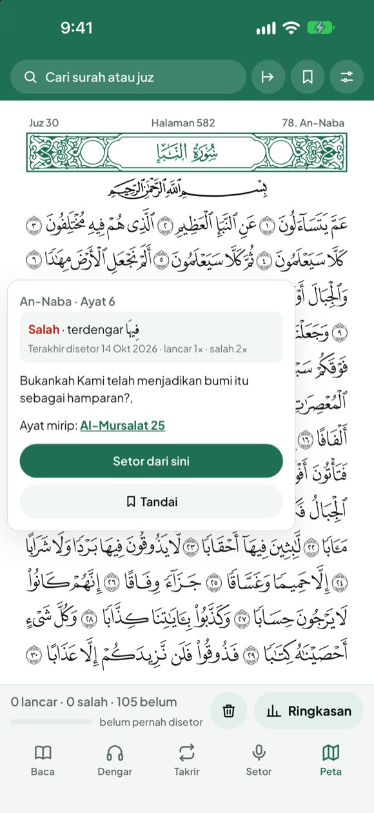
123- 1Ketuk sebuah kata.
- 2Hasil terakhir, apa yang terdengar, dan berapa kali lancar atau salah.
- 3Setor dari sini: langsung setor ulang dari ayat ini.
Ringkasan
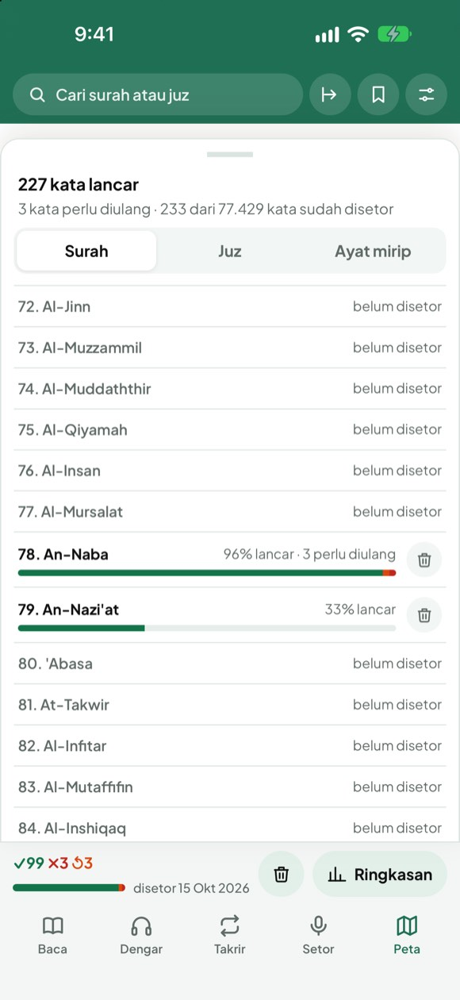
123- 1Per Surah, per Juz, atau Ayat mirip yang pernah tertukar.
- 2Ketuk satu baris untuk membuka halamannya. Garis hijau = bagian yang sudah lancar.
- 3Hapus peta hafalan surah itu saja.
⚙️ Pengaturan
Pengaturan umum
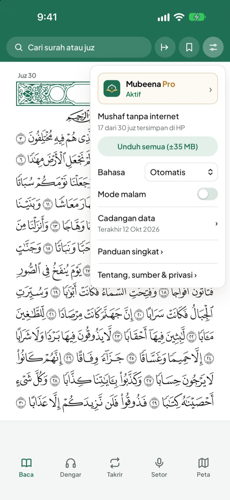
1234567- 1Buka pengaturan.
- 2Mubeena Pro: berlangganan untuk semua surah.
- 3Mushaf tanpa internet: unduh semua halaman sekali.
- 4Bahasa: Indonesia atau English.
- 5Mode malam.
- 6Cadangan data (lihat di bawah).
- 7Panduan singkat: tur pengenalan aplikasi.
Cadangan data
Peta hafalan dan penanda hanya ada di HP ini. Simpan cadangannya supaya tidak hilang dan bisa dipindah ke HP baru, iPhone maupun Android.
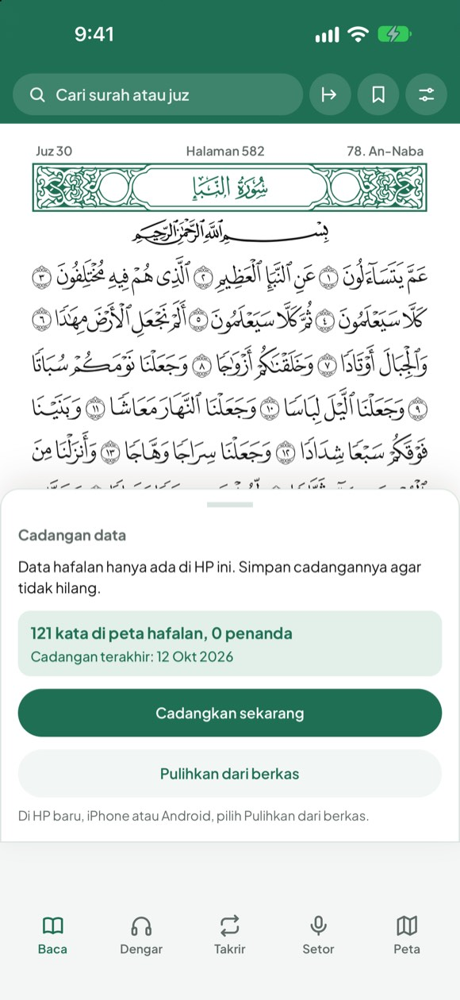
12- 1Cadangkan sekarang: simpan berkasnya ke Files, Drive, atau kirim lewat WhatsApp.
- 2Pulihkan dari berkas: di HP baru, pilih berkas cadangan itu.
Arti warna
- benar dibaca dengan benar
- salah salah baca, terlewat, atau ada kata tambahan
- dibetulkan sempat salah, lalu dibetulkan sendiri
- dibantu dibantu qari saat lupa atau sesudah salah
- catatan pelafalan kurang jelas, tidak dihitung salah hafalan
- garis abu-abu AI sedang memeriksa ulang kata itu
Tips agar AI mendengar dengan baik
- Tempat yang tenang, HP sekitar 30 cm dari mulut, mikrofon jangan tertutup tangan.
- Suara jelas dengan tempo biasa, tidak perlu keras.
- Selama qari membaca, mikrofon berhenti sebentar: tunggu qari selesai, baru lanjut membaca.
- AI bisa keliru, terutama pada suara anak-anak, bacaan yang sangat pelan, atau tempat yang ramai. Lembar hasil menunjukkan apa yang terdengar AI pada setiap kata yang salah. Anggaplah hasilnya sebagai bantuan, bukan pengganti guru.
Ada pertanyaan atau masukan?
Kalau ada bacaan benar yang ditandai salah, kirimkan tangkapan layar lembar hasil beserta nama surah dan ayatnya ke hi.mubeena@gmail.com. Lihat juga halaman Bantuan.
How to use Mubeena
Step by step, with pictures from the app. The orange numbers on each picture show what to tap; the list with the same numbers explains them.
- Before you start
- The main screen
- Finding a surah, ayah or page
- Read
- Listen
- Repeat
- Check (the main feature)
- Continue-the-ayah test
- Similar ayahs
- Memorization map
- Settings
- Colours
- Tips
Before you start
- Open the app with an internet connection the first time: the Quran data is downloaded once, about 5 MB.
- Allow the microphone when asked. Your voice is checked by AI on your phone and is never sent anywhere. The AI works offline; the reciters' audio needs internet.
- The numbers on the pictures show what to tap. Tap a picture to see it larger.
📱 The main screen
Get to know the buttons
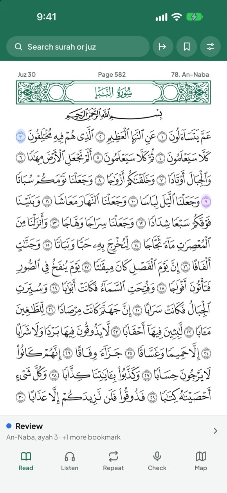
1234567- 1Search surah or juz: type a surah name or pick a juz.
- 2Go to: jump straight to an ayah or a page.
- 3Bookmarks: the places you have marked.
- 4Settings: language, dark mode, data backup, quick guide.
- 5Mushaf page: swipe right for the next page, left for the previous one. Tap an ayah for its options.
- 6Button row for the open tab. In Read: the bookmarks on this page.
- 7Five tabs: Read, Listen, Repeat, Check, Map.
🔎 Finding a surah, ayah or page
Search surah or juz
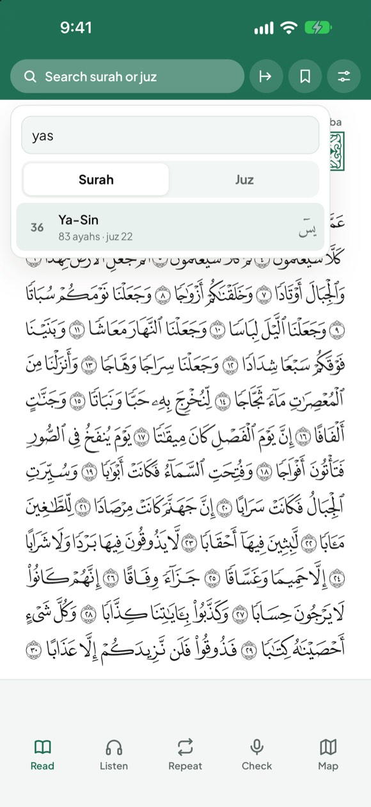
123- 1Type the surah name or number. The list filters as you type.
- 2Choose Surah or Juz.
- 3Tap the surah to open its page.
Go to an ayah or page
Tap Go to (number 2 on the main screen).
- 1Choose Ayah or Page.
- 2Type the surah name, for example "baqarah".
- 3Or scroll the surah list and tap one.
- 4Type the ayah number.
- 5Or scroll the ayah numbers and tap one: it opens straight away.
- 6Tap Open.
📖 Read
Translation and bookmarking
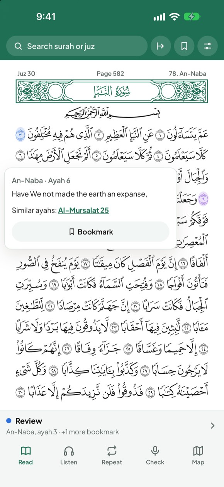
123- 1Tap the ayah number (or one of its words).
- 2The translation of that ayah.
- 3Bookmark: save this ayah to a bookmark (an existing one or a new one).
Bookmarks
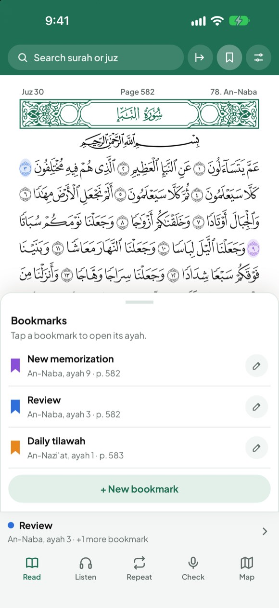
1234- 1Open the bookmark list.
- 2Tap a bookmark to jump to its ayah.
- 3Pencil icon: rename, change colour or delete.
- 4Create a new bookmark for the open page.
🎧 Listen
Listen to a reciter while memorizing, with repeats per ayah.
The Listen tab
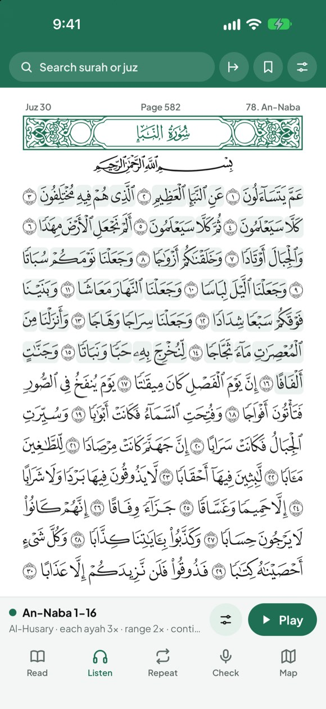
1234- 1Open the Listen tab.
- 2The ayahs that will play and the reciter.
- 3Settings button: reciter, ayahs and repeats.
- 4Play. While playing it becomes Pause.
Choosing what to play
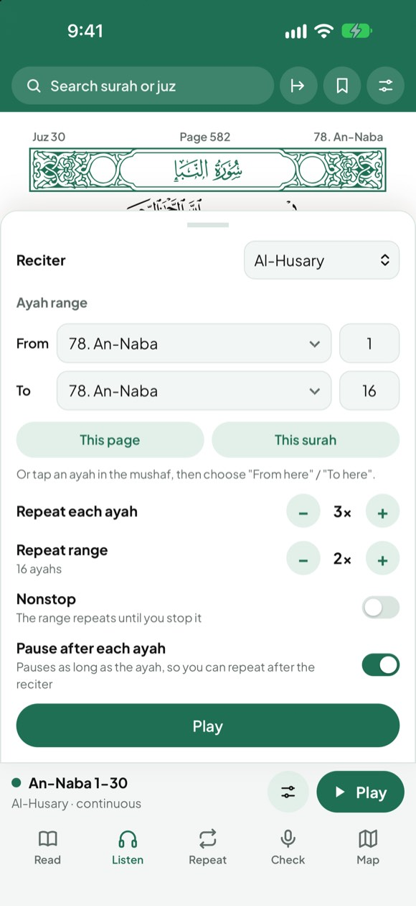
12345678- 1Choose the reciter.
- 2From and To: tap the surah or ayah number to choose.
- 3Shortcuts: This page or This surah.
- 4Repeat each ayah: how many times each ayah plays.
- 5Repeat range: how many times the whole range repeats.
- 6Nonstop: repeats until you stop it.
- 7Pause after each ayah: a pause to repeat after the reciter.
- 8Tap Play.
Choosing the surah and ayah
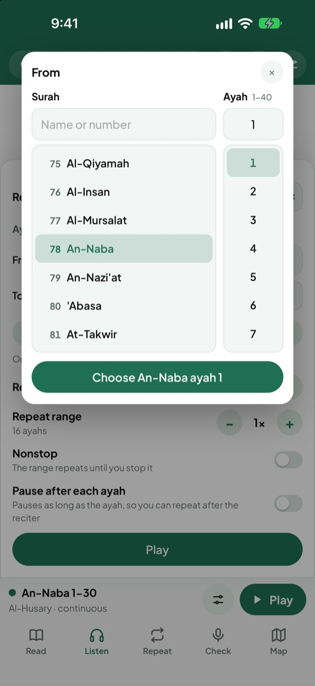
12345- 1Type the surah name; the list filters itself.
- 2Or scroll and tap the surah.
- 3Type the ayah number.
- 4Or tap the ayah number in the list.
- 5Tap Choose.
The quick way from the mushaf
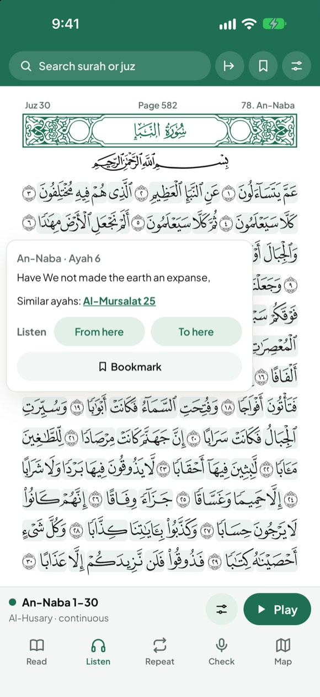
123- 1In the Listen tab, tap the ayah to start from.
- 2From here: start at this ayah.
- 3To here: stop at this ayah. The settings sheet opens; tap Play there.
While the reciter plays
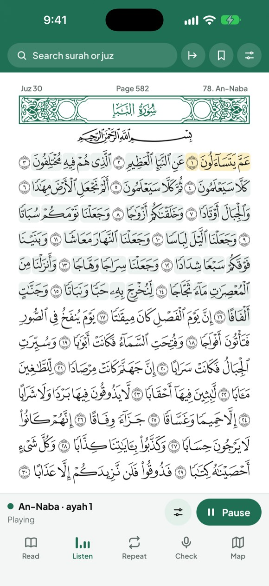
1234- 1The ayah being recited is highlighted; the page turns with it.
- 2The ayah now playing. If you open another page, tap here to go back.
- 3Pause or continue.
- 4The Listen icon moves while playing. Audio keeps playing with the screen locked.
🔁 Repeat
Repeat your memorization until it is fluent, counted with +1 or by the AI.
The Repeat tab
- 1Open the Repeat tab.
- 2How many rounds out of the target.
- 3Settings button: ayahs, target, AI.
- 4Tap +1 each time you finish the range.
Repeat settings
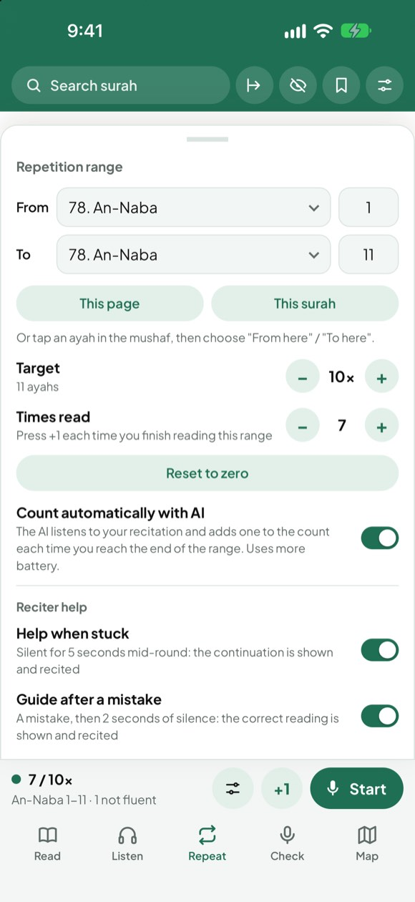
1234567- 1The ayahs to repeat: From and To.
- 2Shortcuts: This page or This surah.
- 3Target: how many rounds you want.
- 4Times read: the current count, adjust with − and +.
- 5Reset to zero.
- 6Count automatically with AI: the AI listens and counts for you.
- 7Reciter help when stuck and after a mistake (only with AI on).
Repeat with AI
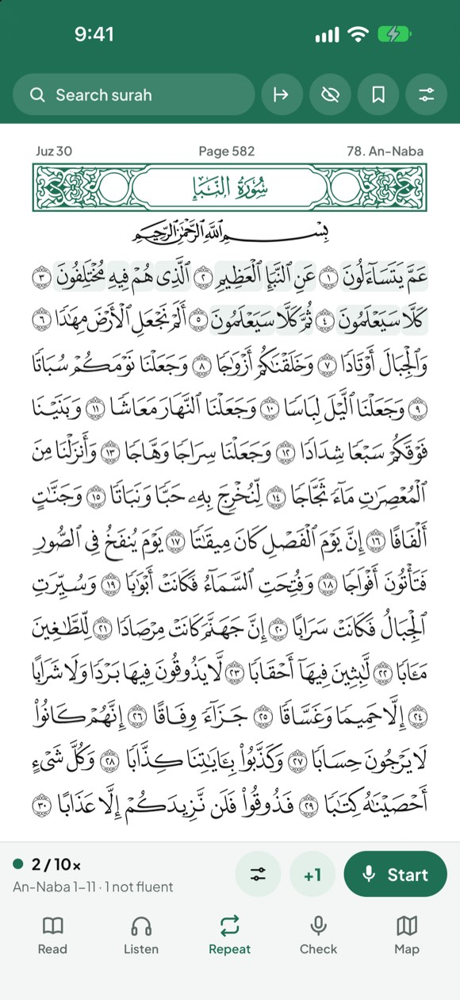
123- 1Tap Start, then recite again and again without touching the phone.
- 2The +1 button is still there if you want to add one yourself.
- 3The count goes up by itself each time you reach the end of the range.
While reciting
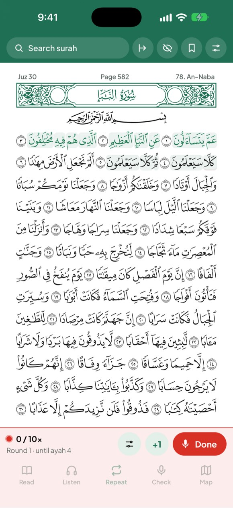
1234- 1Words you have recited turn green.
- 2The underline marks the next word expected.
- 3Which round and how far you are.
- 4Tap Done when finished.
A round is done
As soon as you reach the end of the range, "Round 1 done." appears. Start again from the beginning for the next round.
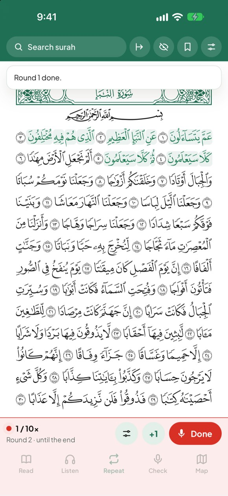
123- 1The count goes up by itself.
- 2The round in progress.
- 3Tap Done when you reach your target or want to stop.
🎙️ Check (the main feature)
Recite your memorization while the AI listens, like reciting to a teacher.
The Check tab
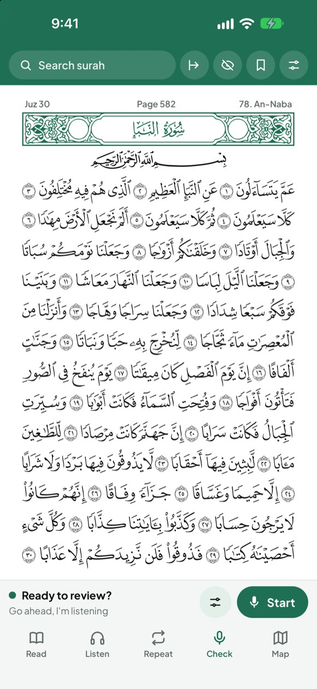
1234- 1Open the Check tab.
- 2Memorization mode: hides the text so you recite without looking.
- 3Check settings (reciter help, alert sound, Continue-the-ayah test).
- 4Tap Start, then recite clearly at a normal pace.
Start from a particular ayah
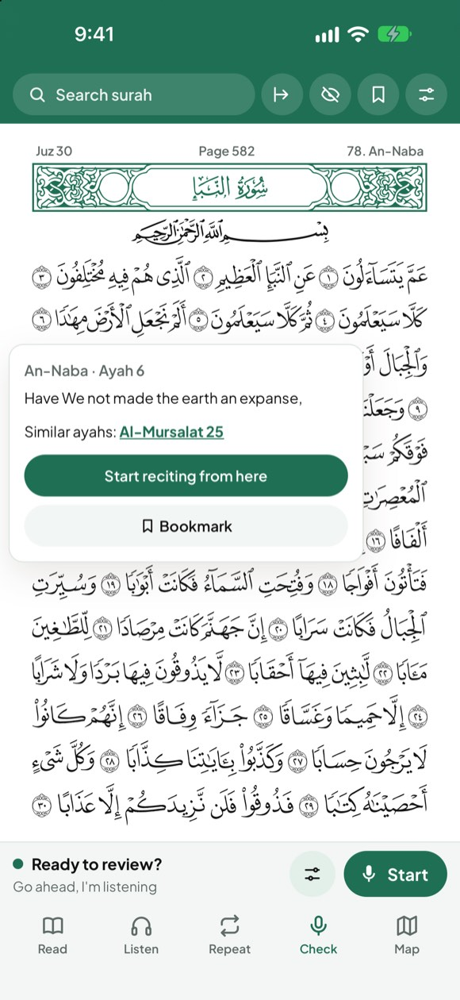
12- 1Tap the ayah where you start.
- 2Start reciting from here.
While reciting
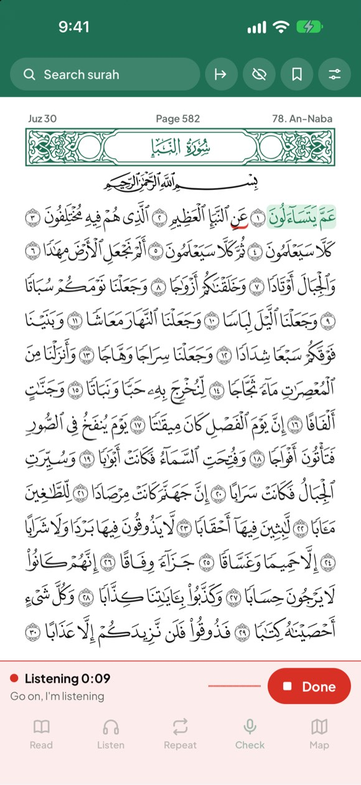
123- 1Correct words turn green as you recite.
- 2The underline marks the next word.
- 3Tap Done when finished.
When you make a mistake
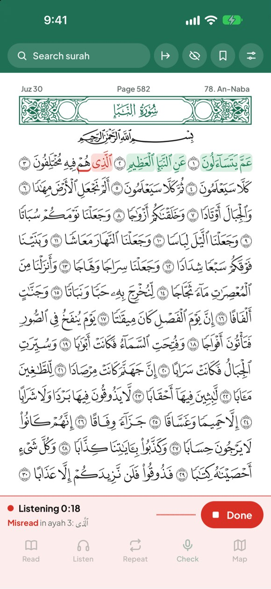
12- 1The wrong word turns red and a "ting" sounds. If you correct it right away, that is enough: it turns orange. (Just before, it has a grey underline: the AI is double-checking it.)
- 2What went wrong, in the bottom row.
The reciter guides you
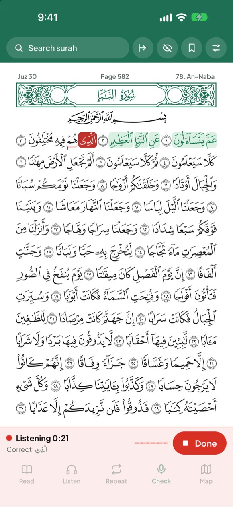
12- 1If you don't correct it, about 2 seconds later the reciter recites the correct words. Listen until it finishes.
- 2Then recite again from that word (or from the start of its ayah).
When you get stuck
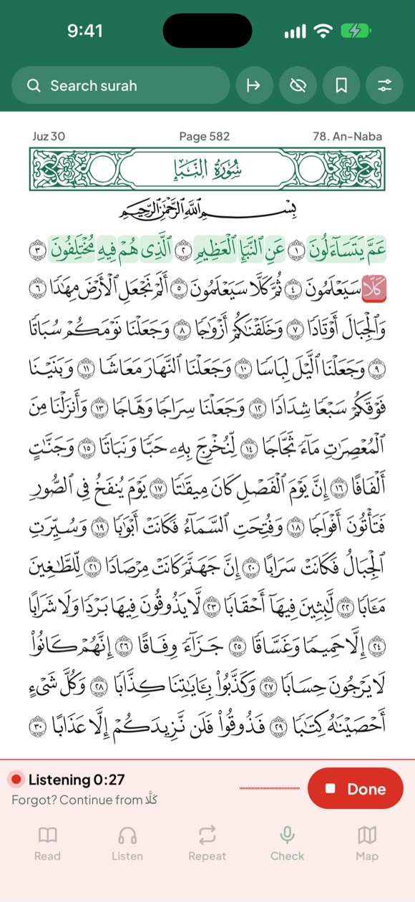
12- 1Just stay silent for about 5 seconds: the next word appears (purple) and the reciter recites it.
- 2Wait for the reciter to finish, then carry on.
The results
Appears as soon as you tap Done.
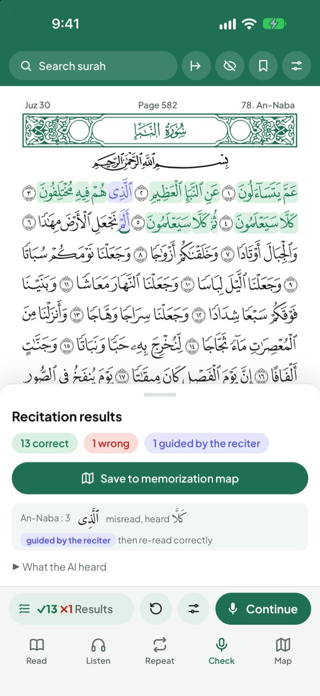
1234- 1How many words were correct, wrong and helped.
- 2Save to memorization map to keep this result.
- 3Your mistakes with what the AI heard. Tap a line to see the word on the page.
- 4"Guided by the reciter": a mistake the reciter recited, and whether you then recited it correctly.
Memorization mode
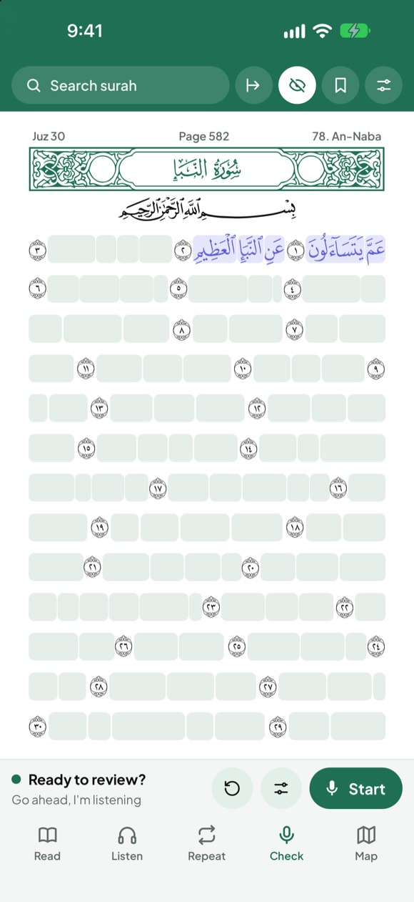
123- 1Turn Memorization mode on or off.
- 2The text is hidden; words appear as you recite them.
- 3Tap a hidden word to peek.
Check settings
- 1Continue-the-ayah test (see below).
- 2Mistake alert sound.
- 3Help when stuck: the reciter helps after 5 seconds of silence.
- 4Guide after a mistake: the reciter recites the correct words.
- 5Recited by the reciter: Mishary Alafasy's voice (needs internet); without it only a soft cue.
🧩 Continue-the-ayah test
Like a hifz exam: the reciter recites a random ayah and you continue from memory.
Setting up the test
Open it from the Check settings › Continue-the-ayah test.
- 1Ayahs from: This page, This surah, This juz or Memorized.
- 2Questions: how many.
- 3Page transitions: questions at the last ayah of a page, to practise moving to the next page.
- 4Tap Start test.
Answering
- 1The question ayah is marked and recited. The rest of the text is hidden.
- 2How many ayahs to continue. Start reciting when the reciter finishes.
- 3It stops by itself after the last ayah; the result is Fluent or Not fluent yet, then Next question.
🔀 Similar ayahs
If you mix up an ayah with a similar one
The results say "confused with …". Tap it.
- 1The ayah you were reciting.
- 2The similar ayah.
- 3The words that differ are coloured.
- 4Open that ayah's page.
🗺️ Memorization map
Seeing your memorization
- 1Open the Map tab.
- 2Every word you have recited and saved is coloured by its latest result.
- 3Colour key and progress on this page.
- 4Delete the map (can be undone for a few seconds).
- 5Summary per surah and per juz.
Details of a word
- 1Tap a word.
- 2Its latest result, what was heard, and how often it was fluent or wrong.
- 3Recite from here: check this ayah again straight away.
Summary
- 1Per Surah, per Juz, or Similar ayahs you have mixed up.
- 2Tap a line to open its page. The green bar = the part that is fluent.
- 3Delete the map of that surah only.
⚙️ Settings
General settings
- 1Open settings.
- 2Mubeena Pro: the subscription for every surah.
- 3Offline mushaf: download every page once.
- 4Language: Indonesian or English.
- 5Dark mode.
- 6Data backup (see below).
- 7Quick guide: the app's introduction tour.
Data backup
Your map and bookmarks live only on this phone. Back them up so they are safe and can move to a new phone, iPhone or Android.
- 1Back up now: save the file to Files or Drive, or send it via WhatsApp.
- 2Restore from file: on the new phone, pick that backup file.
What the colours mean
- correct recited correctly
- wrong misread, skipped, or an added word
- corrected a mistake you corrected yourself
- helped the reciter helped when you were stuck or after a mistake
- note pronunciation not clear, not counted as a memorization mistake
- grey underline the AI is double-checking that word
Tips for the AI to hear you well
- A quiet place, the phone about 30 cm from your mouth, the microphone not covered by your hand.
- A clear voice at a normal pace; no need to be loud.
- While the reciter is reciting, the microphone pauses: wait until the reciter finishes, then carry on.
- The AI can mishear, especially children's voices, very quiet recitation or noisy places. The results show what the AI heard for every word marked wrong. Treat the results as a help, not as a replacement for a teacher.
Questions or feedback?
If a word you recited correctly is marked wrong, send a screenshot of the results with the surah and ayah to hi.mubeena@gmail.com. See also our Support page.